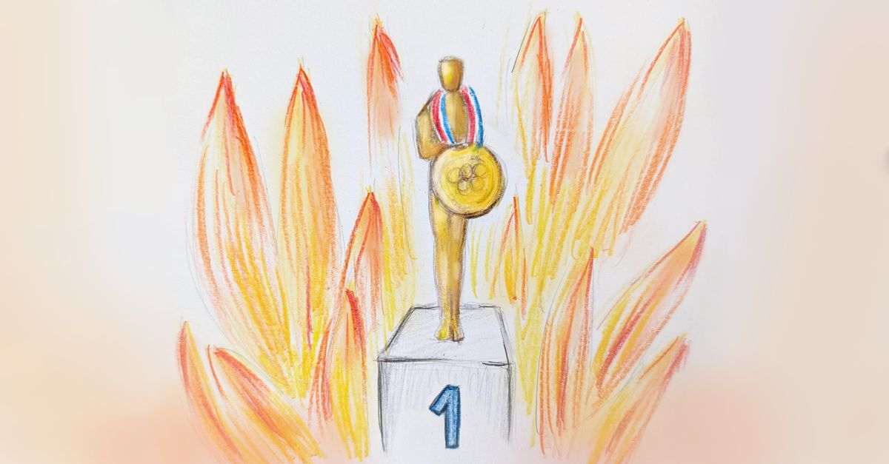

In recognition of doing nothing
- 8 min read

Rewarding problem solving creates a paradox.
Imagine two different teams.
One team, let’s call it Team A, is not very dynamic. The team members are content, they do solid work every day, and work well together. They end their days after 8h of work or less, always take their vacation, no one is working late. The pace of work is steady, you could even say predictable. No last minute commits, no alarm bells that a deadline could potentially be missed. If there is a status update, it is: “everything is on track/ everything works fine”. The software this team produces is simple. Their architecture may be simple too. There are no issues, no customer complaints, no bug reports. They do not release a lot of new features, because they do user research and cheap experiments that don’t involve writing code. The features that do get released tend to be mundane, obvious. Customers get used to them instantly, therefore no one hears much about the reactions. Meh. How boring!
Team A has a leader who rarely talks. In meetings, it’s the team members who talk more. If the leader talks, more often than not, they ask a question. Any time you want to talk to that leader, it’s easy, as they seem to have a lot of free time available for talking. If you want specific details about Team A’s work, the leader will direct you to the team. You won’t hear them talking about what they’ve personally done, it’s only ever “team this, team that”.
This other, second team, let’s call it Team B, has high velocity. There is always something going on with them. One person hates this other person, but thankfully their manager is working through it. They are not only involved in many projects, they are also juggling multiple critical production issues every week. Very busy! They deliver despite delays and various blockers. They work long hours, always staying late, often working over the weekends. You can always reach them via chat or email. They’re the first to jump in when a customer complains, which happens regularly. If you ask this team to deliver any feature, no matter how outlandish the idea is, they will immediately accept and start working on it. They will deliver it quickly and work very hard to resolve all the bugs introduced along the way. Everyone will talk about the release for weeks after. Whenever there is a problem, Team B is already on it. Now that’s a hard-working team!
Team B’s leader is a very busy person, so it’s hard to schedule a meeting with them. But they are very knowledgeable of everything that the team is working on, down to the individual ticket status. And you will probably hear a lot about what they’re doing, because they’re fixing a lot of interpersonal dramas, making sure everything stays on track, and generally getting things done. A lot of what makes Team B successful is down to their leader’s actions.
Let’s look a little closer at those two work modes. One produces consistent, high quality output without any friction. Slow and steady, no drama, no fuss. People working in such environment may not be super excited about work, but they are happy, or rather, content. The other mode involves a lot of action - a lot of problem solving, a lot of achievements. But also a lot of unpredictability and stress. There are many cycles wasted on managing the chaos and fixing various problems that keep popping up. People on such teams tend to churn or burn out. Which then turns into other problems to be solved.
Which mode is better for the business? Obviously not the one with constant fires and heroic solutions. As a business owner, I prefer if my teams avoid problems in the first place. I also don’t want people to waste time on “achievements” that don’t impact the company mission or contribute to the profits. I’m probably not the only executive thinking this way.
With all that in mind, how do you think - which team gets more praise? Who gets rewarded more often? Leader of which team is going to get promoted?
If you’ve worked in the software industry as long as I have, you already know the answer. It’s the likes of Team B and their leader who get all the recognition. It’s a bit of a paradox, isn’t it? If you’re a leader, I want you to think about it for a moment. When was the last time you’ve praised someone for solving an issue? Now, is there someone on your team, right now, who prevented some sort of issue from occurring in the first place? Are you certain? How would you know? And that’s the crux.
We reward people when something happens. We really need a trigger of sorts. You released a new feature - yay! You resolved a difficult personal problem within your team - good job! We really value problem solving. This means that over time, in the long run, we incentivize problem creation.
Let that sink in.
By only rewarding people for solving problems, we penalize foresight and long-term thinking. In these circumstances, people hesitate to spend time on preventing problems from occurring in the first place (which tends to be cheaper and better for the business), because that never gets rewarded.
This is the case in most organizations: people are incentivized to solve problems and not to prevent them. So any team that is similar to Team A from my example is eventually going to get displaced by teams that are more akin to Team B, with a detriment to the business and everyone’s well-being. If you’re a leader, and even more so if you’re leading leaders, it’s going to be your fault.
It’s bad enough on a team level, but it’s even worse when we realize this applies to leaders themselves. Leaders are supposed to be multipliers. Their value doesn’t come from the concrete work output they themselves produce, but from enabling multiple other people to deliver better work. I say “better” not “more”, because it doesn’t matter for the business if people are working hard. What matters is whether their work makes the company money. Oftentimes, and contrary to Silicon Valley startup culture, it requires keeping a steady, predictable pace to sustain profitable operations. But if you need to do something to get rewarded as a leader, you will have to constantly tweak the teams, process, shuffle people around, start new projects… even if none of these things are needed. So now, instead of a multiplier of value, we have a multiplier of chaos. Great success!
Rewarding people when something happens is easy mode. I’m not saying we shouldn’t do it, we absolutely should. Problem solving is good. But problem prevention is worth more. By only recognizing people when they do something, when they solve problems, we effectively penalize prevention. That’s lazy leadership.
But hold on, does that mean we should reward people for nothing? In a weird way, to an extent, yes. We should absolutely reward teams and leaders when nothing happens. When things are stable and running smoothly, when no one complains. This requires effort, because we need to remember to pay attention. It’s normal for humans to get used to the status quo and stop noticing when things are working well, so we have to work against our nature here. It’s best to establish a cadence that matches your business cycles - quarterly, yearly, whatever it is, when we contemplate which teams and individuals are simply delivering without making noise. It’s different than typical performance evaluation in that it focuses on outcomes rather than actions and teams rather than individuals.
The risk here is falling into another lazy leadership trap, which is very common in my corner of Europe: rewarding tenure. You’ve been working at this company for ten years? Automatic promotion! Just hanging around, doing nothing, but showing up every day, year after year? Good job, here’s your bonus! That’s also not good. By simply rewarding people on a timer, we’re incentivising passiveness and mediocrity. We want people we employ to actually do things, the right things. But if teams or individuals who do a good job causing no drama look exactly the same as teams or individuals who do nothing, how can we tell which is which? That requires the leadership - us, to do some actual, hard work. I’m sorry.
A good problem preventer does things, but minimally and quietly. Lines of code removed. Lines of code not written. The number of times they say “no” while having reasons they can articulate. Managing stable teams with a healthy dose of churn. In order to see these things, you need to look closely and pay attention. And most importantly, follow the value. As a leader, you need to know what brings value to whom and how much it’s worth to the company. I’m talking actual value for the business, not the fuzzy gut-feel “this looks good” kind of thing. If you trace the value flow, it should be immediately obvious which team generates the most of it, which individuals enable that flow, and which merely stand in it.
This is hard work but it’s what we’re paid for.